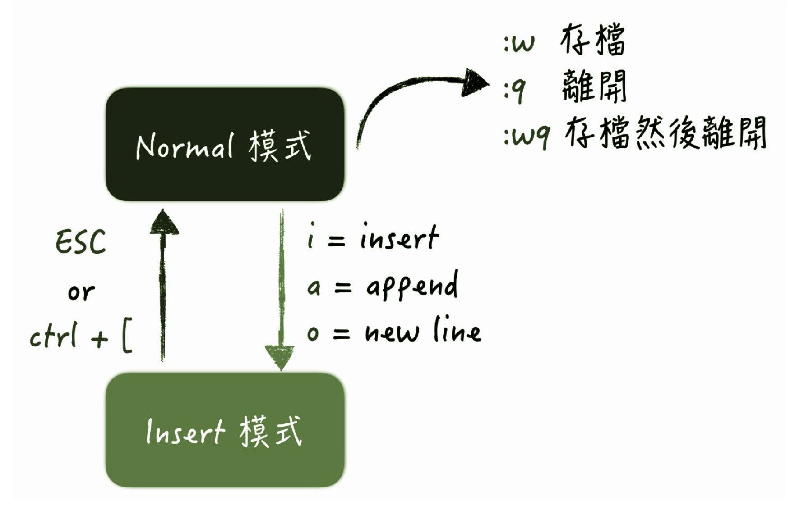

Vim 操作

Example:
#! /usr/bin/bash
echo "The script name is ==> ${0}"
echo "Total parameter number is ==> $#"
[ "$#" -lt 2 ] && echo "Parameter is less than 2." && exit 0
echo "Your whole parameter is ==> '$@'"
total=$((${1}+${2}))
echo The sum is : ${total}